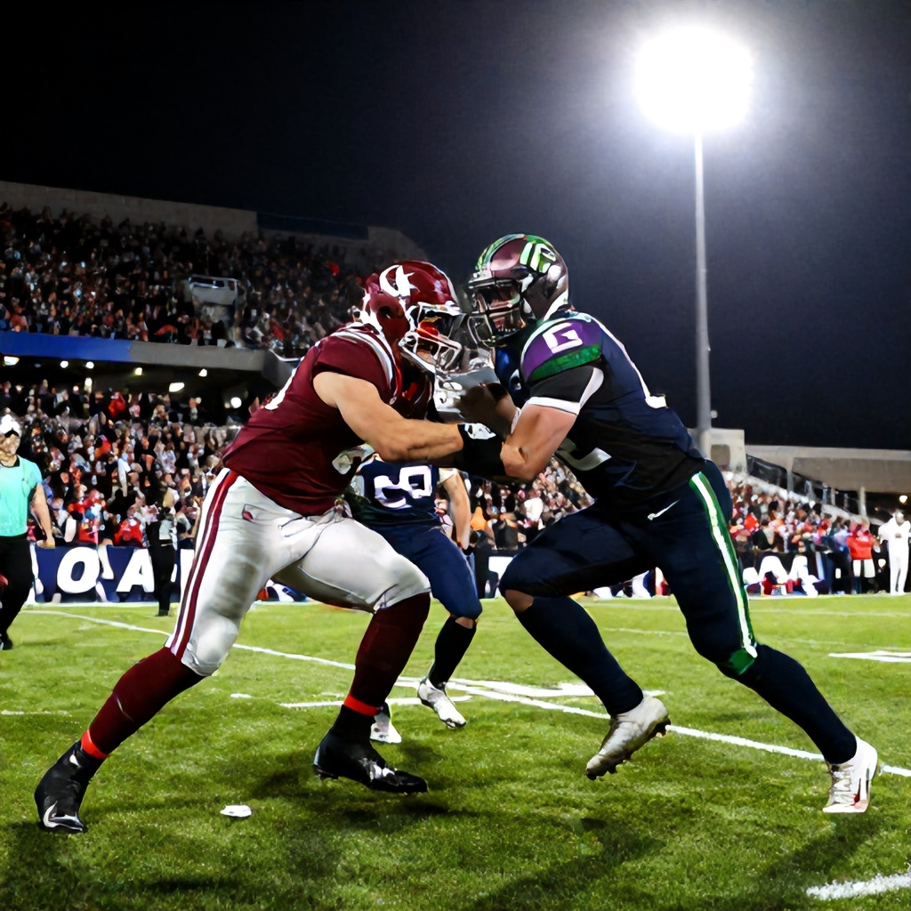

The CFL’s most storied rivalry is set to unfold once again as the Calgary Stampeders host the Saskatchewan Roughriders on Saturday, June 20, 2026, at McMahon Stadium in Calgary, Alberta. This matchup isn’t just another regular-season game—it’s a clash steeped in history, pride, and early-season stakes.
A Rivalry Renewed
The Calgary-Stampeders vs. Saskatchewan Roughriders rivalry is one of the most enduring in Canadian football. With both franchises having claimed multiple Grey Cup victories—Calgary with eight and Saskatchewan with six—the battle between these two teams has often been defined by high-stakes moments and dramatic outcomes. The emotional intensity of this rivalry makes every meeting a must-watch event for CFL fans.
This season, both teams are looking to establish themselves as serious contenders in their respective conferences. For the Stampeders, who have been a consistent force in recent years, the goal is to maintain their competitive edge while building momentum ahead of the playoffs. Meanwhile, the Roughriders aim to bounce back from last year’s challenges and reassert their position among the league’s elite.
Schedule Context
The timing of this matchup comes at an important juncture in the season. Just a week prior, the Roughriders faced off against the BC Lions on Friday, June 13, 2026, offering a glimpse into their current form and strategy. While no betting lines were available for that game, it sets the stage for how Saskatchewan might approach their next challenge.
As for the Stampeders, they’ll be aiming to build on their strong home performance at McMahon Stadium—a venue known for its electric atmosphere and passionate fanbase. The energy generated by the crowd could prove pivotal in a tight contest.
Early-Season Stakes
With both teams fighting for playoff positioning, every game carries significant weight. The outcome of this matchup could influence seeding and momentum heading into the latter half of the season. Both squads are likely to bring their best efforts to the field, knowing that a win here could make all the difference in the standings.
For fans, this game represents more than just a sporting event—it's a showcase of the passion and tradition that define the CFL. Whether it's the roar of the crowd at McMahon Stadium or the strategic brilliance on display from both coaching staffs, this game promises to be a compelling chapter in the ongoing saga of the Calgary-Saskatchewan rivalry.
As we gear up for what should be a thrilling showdown, one thing remains certain: the battle between the Stampeders and the Roughriders will continue to captivate audiences and fuel debate across the CFL landscape.